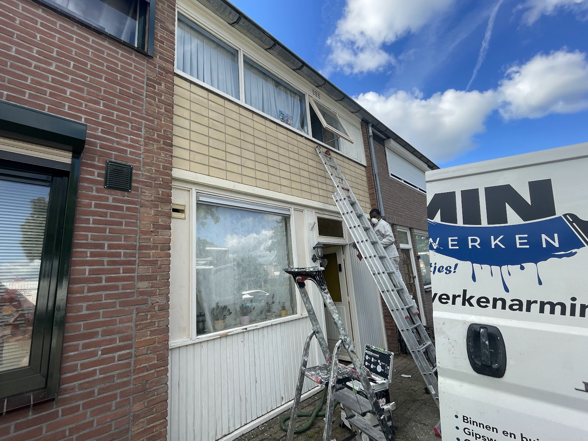
Buiten
De hele buitenkant van uw woning: muren, kozijnen, deuren, boeiborden, dakkapellen en meer. Rot of beschadigd hout repareren we eerst.
- Kozijnen, ramen en deuren
- Gevels en muren
- Boeiborden en dakkapellen
- Houten reparaties
Schilderwerken Armin uit Brummen verzorgt uw schilderwerk van kozijn tot plint, en ook behang, stucwerk en gipswanden. Met meer dan 10 jaar ervaring en één belofte: perfectie tot in de puntjes.
4,6 op Google uit 17 reviews
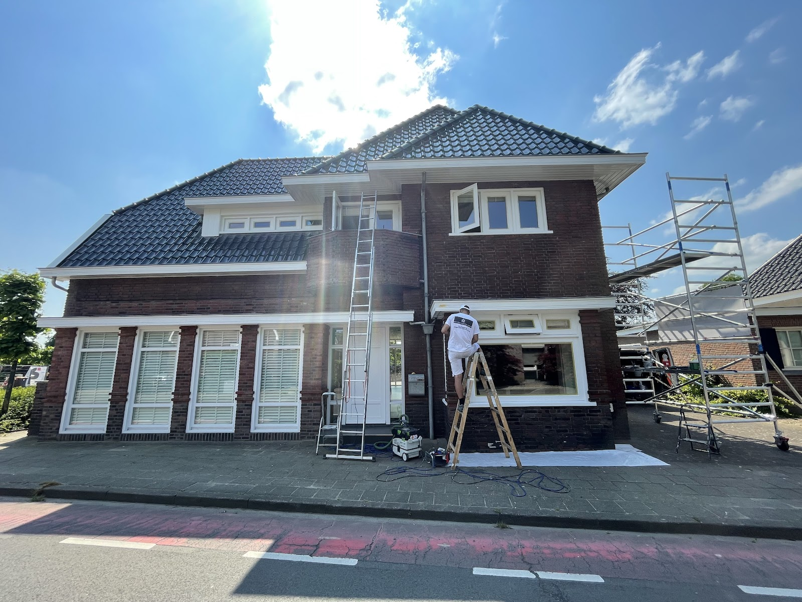
Een rieten boerderij met een gevel vol plekken en losse stukken. Eerst gerepareerd en gegrond, daarna strak in het wit gezet met een antraciet plint.
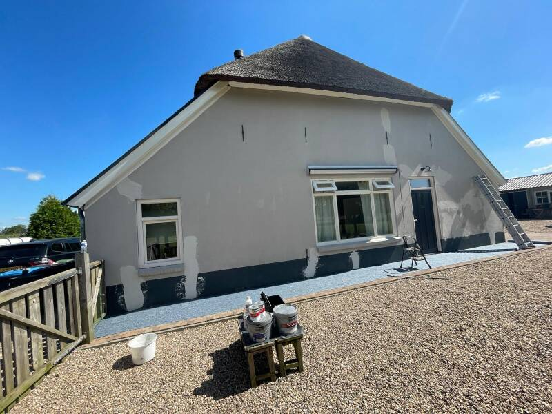
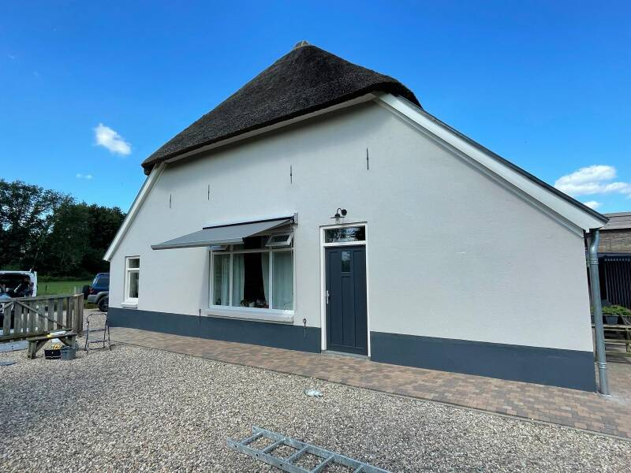
“Armin is een fijne vent en een prettige schilder. Vriendelijk, behulpzaam, zorgvuldig. Onze boerderij staat er van buiten weer netjes bij.”

De hele buitenkant van uw woning: muren, kozijnen, deuren, boeiborden, dakkapellen en meer. Rot of beschadigd hout repareren we eerst.
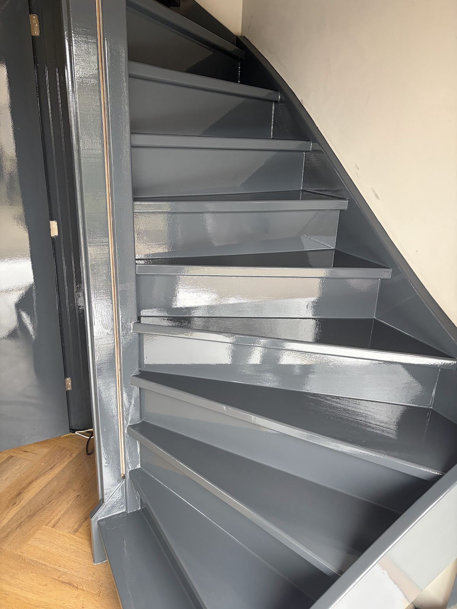
Van sierlijsten tot plinten, en van trap tot plafond. Ook voor behang, glad stucwerk en nieuwe gipswanden kunt u bij ons terecht.
Twijfelt u over de kleur? Die kiezen we in overleg met u, passend bij uw huis.
Een strak resultaat zit in de voorbereiding. Daarom slaan we geen stap over, ook niet waar u het later niet meer ziet.
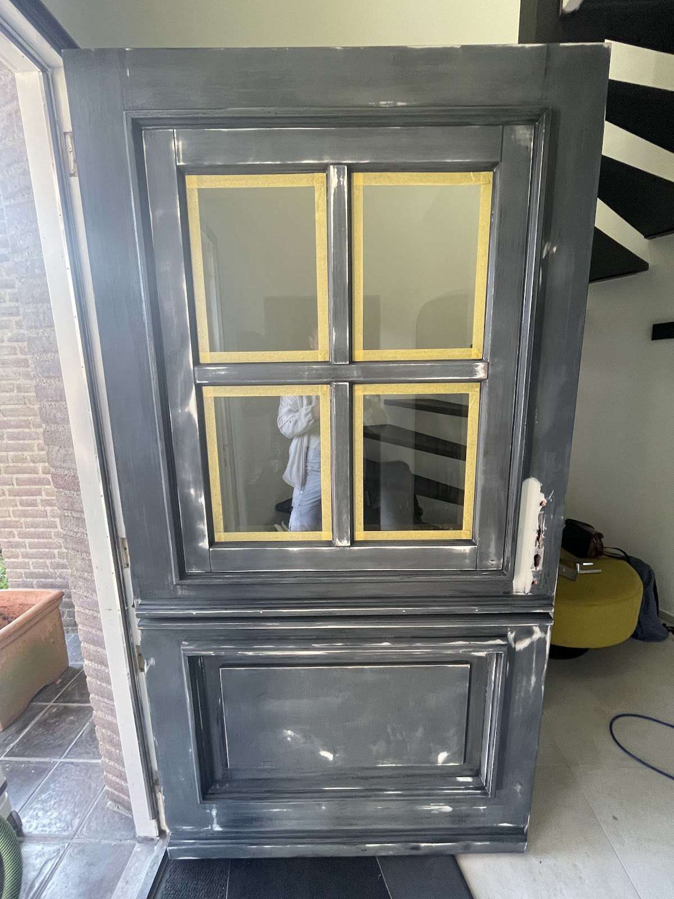
1Schuren en afplakken
Oude lak eraf, gaten en beschadigingen gerepareerd, glas netjes afgeplakt.
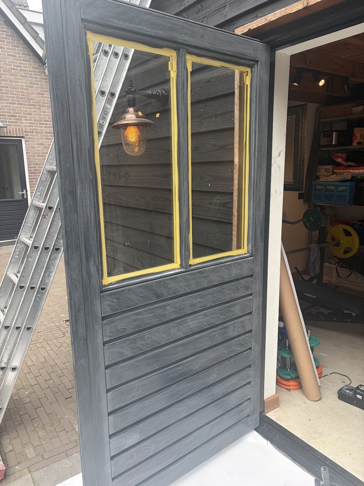
2In de grondverf
Een goede primer zodat de laklaag hecht en lang mooi blijft.
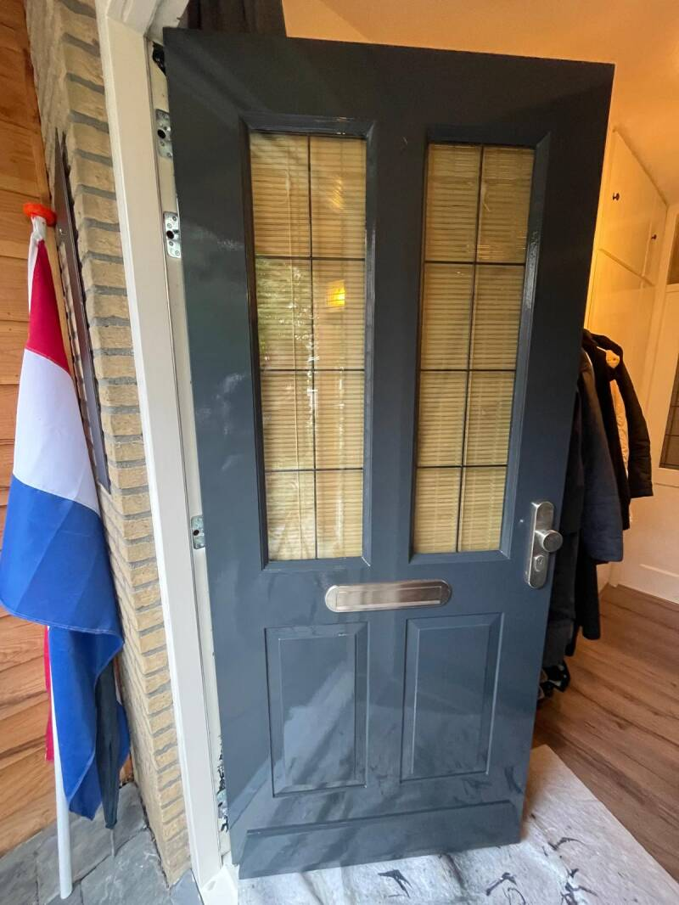
3Aflakken en opruimen
De aflaklaag erop, en daarna laten we alles netjes achter.
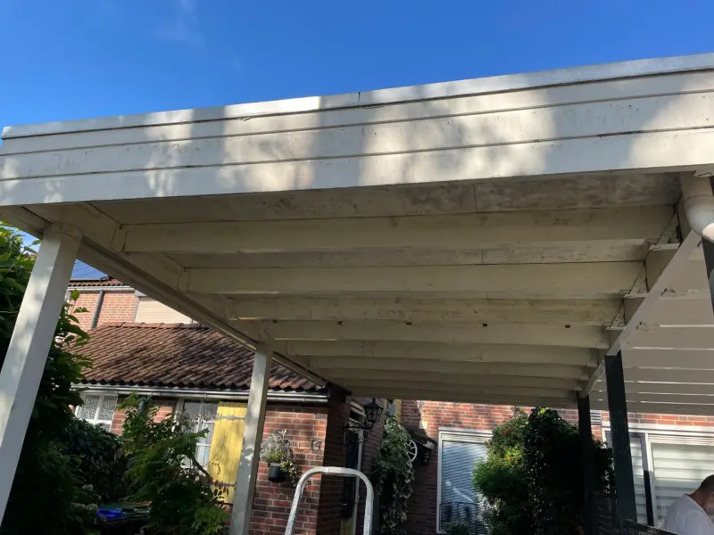
Voor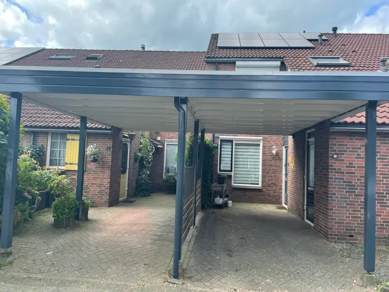
NaCarport: palen en balken in antraciet, het plafond weer fris wit.
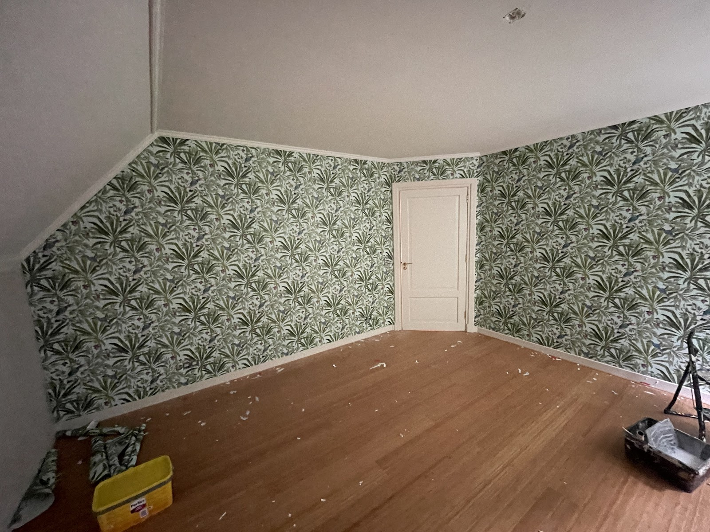
Zolderkamer behangen, tot in de schuine hoeken.
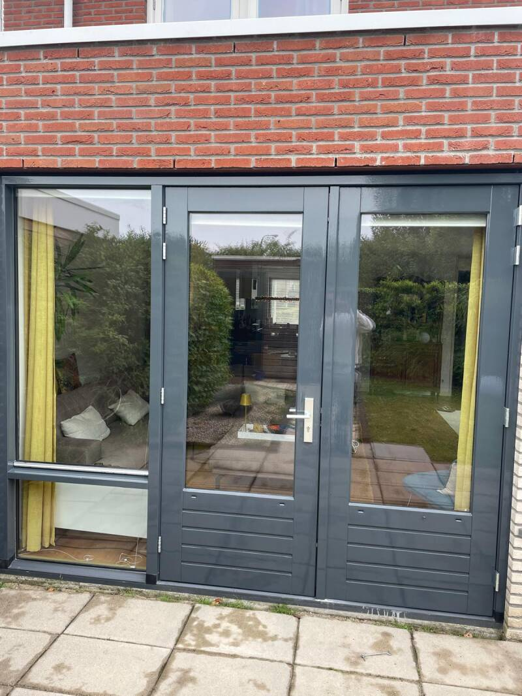
Tuindeuren en kozijn in antraciet.
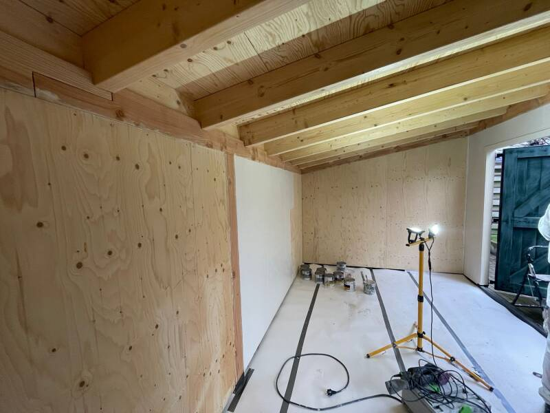
Voor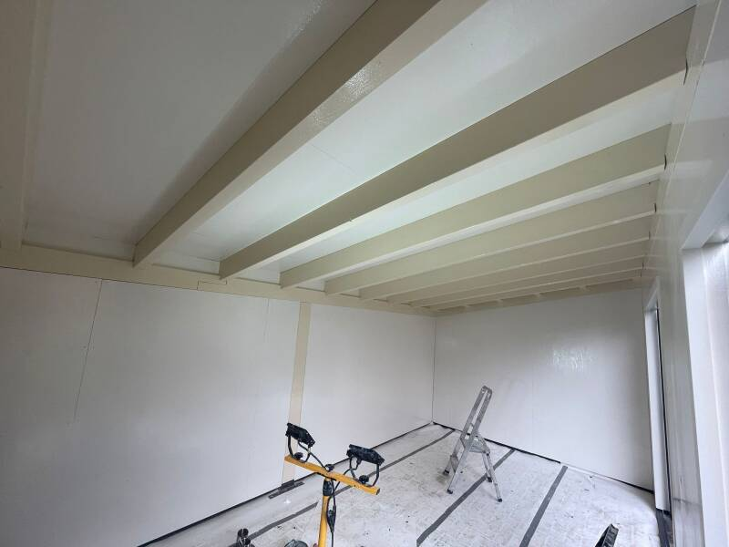
NaTuinhuis van binnen: van kaal hout naar licht en strak.
4,6 op Google, uit 17 reviews
“Armin en zijn mannen hebben bij ons echt topwerk geleverd. Alles eerst in de primer en toen pas de aflaklaag er op. Het resultaat is superstrak! En ook zeer schoon gewerkt. Topteam voor een goeie prijs.”
“Armin heeft ons uitstekend geholpen met binnen - en buiten schilderwerk. Armin koppelt gedegen vakmanschap en persoonlijkheid, hij is altijd goedlachs, heel vriendelijk en aardig, en werkt ook nog eens hard. Een aanrader!”
“Wij hebben de buitenkant van onze woning door schilderwerken Armin laten doen. Kozijnen deuren en boeiborden. Wij zijn meer dan tevreden het is een hardwerkende jongeman die zijn afspraken nakomt en alles in overleg doet. Hij is zeer vriendelijk en werkt lekker door.”
“Een schilder om iedereen aan te raden. Zeer correcte jongenman. Die netjes optijd komt En ze werk uitmuntend doet. Wij moesten ons hout werk rondom het huis gedaan hebben. Alles is weer super mooi geworden nogmaals dank Armin en wie weet tot de volgende keer. Groetjes fam AS”
“Schilderwerken armin heeft bij ons de slaapkamers behangen en de gang en woonkamer muren geschilderd. Hij werkt zeer netjes en ruimt alles netjes op nadat hij klaar is. De muren zien er strak uit zoveel het behang als de geverfde muren.”
“Schilderwerken Armin heeft bij ons heel mooi werk geleverd aan de buitenzijde. De ramen, deuren, luiken en boeien zien er weer prachtig uit. Ze leveren erg goed en zorgvuldig werk en doen goed hun best, schuren primen en lakken. Na afloop wordt er ook weer keurig opgeruimd.”
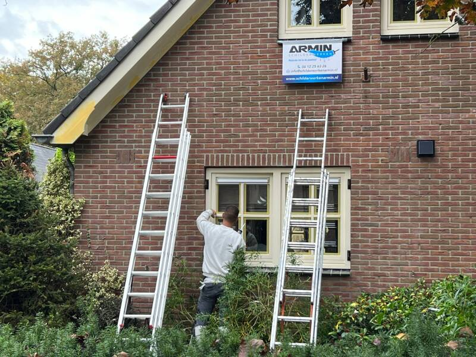
Schilderwerken Armin is een schildersbedrijf uit Brummen, met meer dan 10 jaar ervaring in het vak. We doen schilderwerk binnen en buiten, houten reparaties, behang, stucwerk en gipswanden.
De kleur kiezen we samen met u. Daarna werken we met goede materialen en tegen een eerlijke prijs, tot alles klopt.
Perfectie tot in de puntjes.
Vrijblijvend. Bel of mail ons, dan komen we graag langs om het werk te bekijken.
06 12256326 info@schilderwerkenarmin.nl